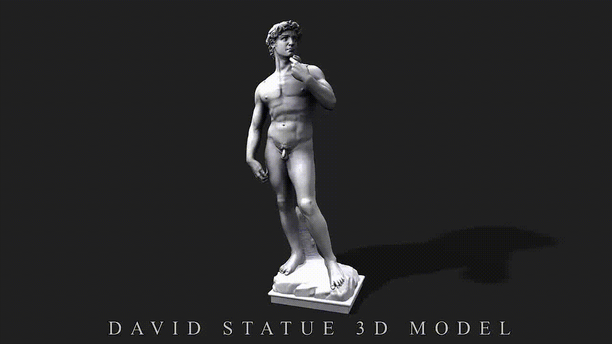

Michelangelo Buonarroti

Michelangelo Buonarroti was an Italian sculptor, painter, architect, and poet — one of the greatest masters of the Renaissance, often called "the Divine One." He created over 300 sculptures, frescoes, and architectural projects that changed the history of art forever.
Early Years and Training

Born on March 6, 1475 in the small town of Caprese near Arezzo. At 13 he became an apprentice to the renowned Florentine painter Domenico Ghirlandaio. A year later he was noticed in the Medici sculpture garden, where he studied antique statues. It was there that his unique style took shape — a fusion of power, emotion, and anatomical precision.
Sculpture — His Greatest Passion
Michelangelo regarded sculpture as the highest form of art. He declared that "every block of marble already contains a statue — one need only set it free." His technique of non-finito (deliberate incompleteness) was revolutionary — the viewer is invited to mentally complete the work.
Most Famous Sculptures
At 23 he created the magnificent Pietà (1498–1499) — the only work he ever signed. At 26 he carved the legendary David (1501–1504) from marble considered ruined — a symbol of Florentine freedom. Later, for the tomb of Pope Julius II, he carved Moses (1513–1515), one of the most powerful sculptures in history.

The Sistine Chapel and Architecture

Between 1508 and 1512 he painted the ceiling of the Sistine Chapel — 300 figures in four years. He later created the fresco The Last Judgment. As an architect he designed the dome of St. Peter's Basilica in Rome (which became the principal symbol of the Vatican) and the Laurentian Library in Florence.
Personal Life and Death
Michelangelo never married, devoting himself entirely to art. He lived modestly, often working through the night, sleeping in his clothes. He had a difficult temperament, clashing with popes, yet remained devoted to Florence. He died on February 18, 1564 in Rome at the age of 88. His body was secretly transported to Florence, where he is buried in the Basilica of Santa Croce.
Legacy
Michelangelo lived 88 years and worked to his last day. His art is considered the pinnacle of world culture and continues to inspire millions. He became the symbol of a genius who united the power of the sculptor, the mastery of the painter, and the vision of the architect.